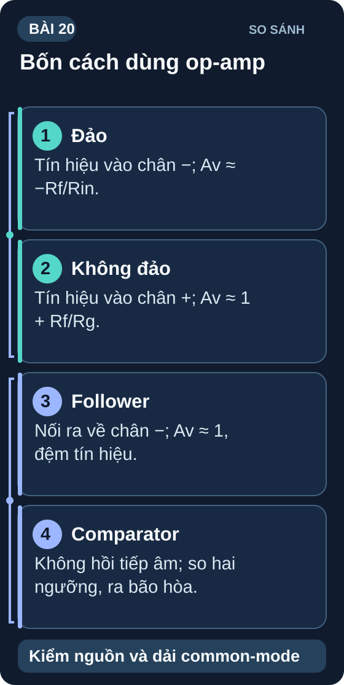
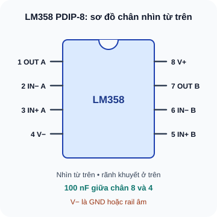
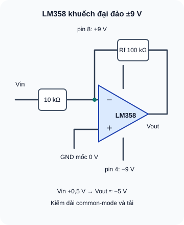
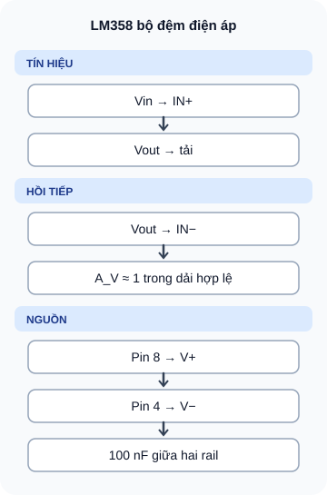
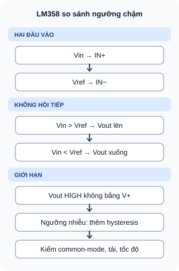

Op-Amp — Khuếch Đại Thuật Toán Cơ Bản
Linh kiện analog đa năng nhất — khuếch đại, so sánh, lọc, tạo dao động và xử lý tín hiệu analog chuyên nghiệp.
- Hiểu Op-Amp là gì — đặc tính lý tưởng và thực tế
- Nhận biết IC LM358 (dual op-amp) và TL071 — đọc sơ đồ chân
- Phân tích mạch Inverting Amplifier — tính A_V = –R_f/R_in
- Phân tích mạch Non-Inverting Amplifier — tính A_V = 1 + R_f/R1
- Mạch Voltage Follower (Unity Gain Buffer) — tại sao cần
- Mạch Comparator — so sánh hai điện áp, đầu ra nhị phân
- Hiểu tại sao cần decoupling 100nF sát chân VCC của Op-Amp
- Lắp và đo kiểm các cấu hình thực tế

Dụng cụ
| Tên | Thông số | SL |
|---|---|---|
| IC LM358 | Dual op-amp, single supply 3–32V, DIP-8 | 2 |
| Điện trở 1kΩ, 10kΩ, 47kΩ, 100kΩ | ¼W — nhiều giá trị cho các tỷ lệ khuếch đại | 3 mỗi loại |
| Biến trở (potentiometer) 10kΩ | Để tạo tín hiệu đầu vào thay đổi | 1 |
| Tụ 100nF gốm (decoupling VCC) | 2 cái sát chân VCC op-amp | 4 |
| LED + R470Ω (test output comparator) | — | 1 |
| Nguồn 5V hoặc 9V + breadboard + multimeter | — | 1 bộ |
1. Op-Amp — Khuếch đại thuật toán lý tưởng và thực tế
Op-Amp (Operational Amplifier) là IC khuếch đại vi sai (differential amplifier) có độ lợi vòng hở (open-loop gain) cực lớn (100,000–1,000,000 lần). Khi thêm mạch phản hồi âm (negative feedback) qua điện trở, độ lợi được điều chỉnh chính xác theo tỷ lệ điện trở.

Bản chữ của sơ đồ
LM358 TI PDIP-8 nhìn từ trên, rãnh khuyết ở trên: trái trên xuống 1 OUT A, 2 IN− A, 3 IN+ A, 4 V−; phải dưới lên 5 IN+ B, 6 IN− B, 7 OUT B, 8 V+. Tụ 100 nF nối pin 8 và 4 gần IC. V− không luôn là GND: với nguồn hai cực là rail âm.
| Đặc tính | Op-Amp lý tưởng | LM358 thực tế |
|---|---|---|
| Độ lợi vòng hở | ∞ | ~100,000 |
| Trở kháng đầu vào | ∞ (không hút dòng) | ~1MΩ |
| Trở kháng đầu ra | 0 | ~50Ω |
| Băng thông (GBP) | ∞ | 1MHz |
| Output swing (single supply 5V) | 0V–5V | ~0V–3,5V (không rail-to-rail) |
2. Bốn cấu hình op-amp cơ bản nhất
2.1 Inverting Amplifier — Khuếch đại đảo pha

Bản chữ của sơ đồ
Vin qua Rin 10 kΩ vào IN−. Rf 100 kΩ hồi tiếp từ Vout về đúng nút IN−. IN+ về GND tham chiếu. Pin 8 tới +9 V, pin 4 tới −9 V. Với Vin +0,5 V, Vout lý tưởng khoảng −5 V khi dải đầu vào/đầu ra và tải cho phép. Nguồn đơn cần Vref và kiểm dải common-mode, không tạo được áp âm.
2.2 Non-Inverting Amplifier — Khuếch đại thuận pha
2.3 Voltage Follower (Unity Gain Buffer)

Bản chữ của sơ đồ
Vin vào IN+; nối trực tiếp Vout về IN− tạo phản hồi âm; Vout xấp xỉ Vin khi đầu vào nằm trong dải common-mode, đầu ra còn headroom, tải nằm trong khả năng LM358. Pin nguồn 8 tới V+, pin 4 tới V−; tụ 100 nF giữa hai rail.
2.4 Comparator — So sánh điện áp

Bản chữ của sơ đồ
Vin vào IN+; Vref vào IN−; không hồi tiếp âm. Vout đi lên khi Vin vượt Vref và xuống khi Vin thấp hơn Vref, nhưng không đạt rail dương khi tải và nguồn giới hạn. LM358 dùng như comparator chỉ cho tín hiệu chậm, kiểm common-mode, tốc độ và trạng thái khi sát ngưỡng; thiết kế cần chuyển mạch sạch nên dùng comparator chuyên dụng/hysteresis.
LM358 op-amp có thể dùng làm comparator nhưng chậm hơn (slew rate thấp). LM393 được thiết kế riêng làm comparator: nhanh hơn, có output open-collector → dễ ghép với các mức logic khác. Với ứng dụng chậm (nhiệt độ, mức nước) LM358 comparator đủ tốt. Với tốc độ cao, dùng LM393.
3. Thực hành: Non-Inverting Amplifier LM358
Lắp LM358 op-amp 1 (chân 3=IN+, chân 2=IN–, chân 1=OUT). VCC=5V vào pin 8, GND vào pin 4. Tụ 100nF từ VCC→GND sát IC.
Non-Inverting: R_f=90kΩ (hoặc 2×47kΩ nối tiếp) từ OUT→IN–. R1=10kΩ từ IN–→GND.
Biến trở 10kΩ: một đầu VCC, một đầu GND, giữa vào IN+. Điều chỉnh để V_in = 0,2V.
Đo V_out: kỳ vọng = 10 × 0,2V = 2V. Tăng V_in đến 0,35V → V_out kỳ vọng 3,5V.
Tăng V_in đến 0,5 V: công thức lý tưởng cho độ lợi 10 cho V_out = 5 V, nhưng LM358 cấp nguồn đơn 5 V không đạt sát rail dương. Đo V_out thực tế; mức cao phụ thuộc tải và phiên bản IC, không mặc định 3,5 V.
1: A_V = –22kΩ/2,2kΩ = –10. Với IN(+) ở 0V và nguồn hai cực phù hợp (ví dụ ±9V), V_out lý tưởng = –10 × 0,5V = –5V. Nguồn đơn 0–5V không thể tạo –5V; cần đặt điểm phân cực giữa nguồn và tính theo sai lệch Vin–V_ref hoặc dùng nguồn hai cực.
2: 15 = 1 + R_f/10kΩ → R_f = 14 × 10kΩ = 140kΩ. Chọn 2×68kΩ nối tiếp = 136kΩ hoặc 150kΩ.
3: Nếu cảm biến cho điện áp tăng theo ánh sáng: ánh sáng mạnh → V_sensor >1V → V_in(+) > V_ref(–) → V_out HIGH (thấp hơn VCC tùy tải). Ánh sáng yếu → V_sensor <1V → V_out LOW. Muốn bật đèn khi tối phải dùng logic đảo hoặc đổi hai đầu vào comparator và thêm driver tải.
4: LM358 chuyển mạch nội bộ tạo dòng spike ngắn trên VCC. Không có tụ decoupling → spike đi qua dây nguồn ảnh hưởng IC khác (VCC sụt cục bộ, nhiễu analog). Với tụ 100nF sát chân: spike được hấp thụ tại chỗ → mạch ổn định hơn, ADC chính xác hơn.